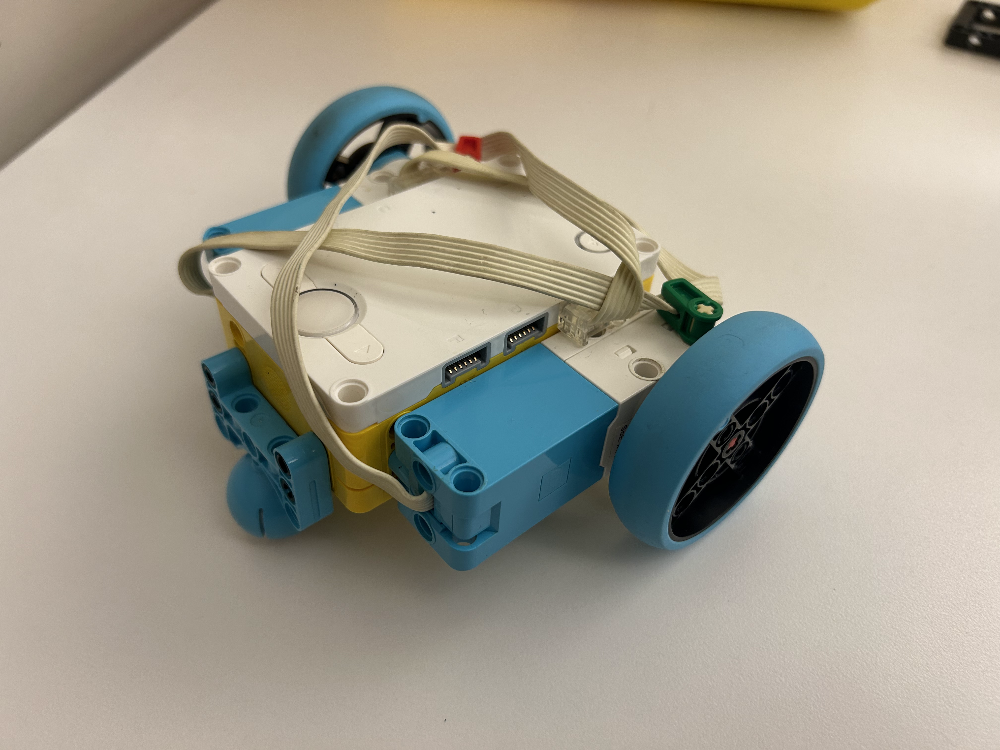

For this project, I built and programmed a simple two-wheeled car to explore basic robot motion and control. I programmed the car to drive forward and backward at both slow and fast speeds, spin in place clockwise and counter-clockwise, and follow circular arcs with both small and large radii. The video shows each maneuver and how changing the speed and direction of each wheel changes the car’s path.